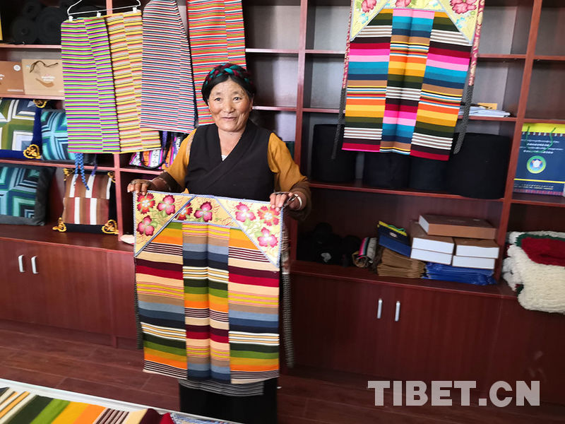

千年传承的纺织史诗
从新石器时代到现代，邦典的演变见证了藏族文明的发展脉络
卡若遗址见证早期纺织
西藏昌都卡若遗址出土的131枚骨针、208件骨角质锥形工具及6件陶质纺轮等文物，证明早在5000年前，西藏地区就已经有了纺织活动。新疆哈密地区出土的毛织品中发现的"五颜六色的红、绿、棕、黑条纹"，表明当时已出现条纹元素的纺织品。
毛纺织业成为重要经济部门
吐蕃王朝时期，牧业发达，毛纺织业成为重要经济部门。敦煌吐蕃文书记载了对牧区的"大料集"和赋税征收。赞普松赞干布时期开展颜料草贸易，说明当时不仅纺织毛料，还具备染色技术。都兰热水墓葬出土的彩色服饰进一步证明了吐蕃时期染色技艺的发展。
邦典形制基本确立
英国藏学家Hugh Richardson对11世纪艾旺寺壁画的考证表明，供养人眷属服饰中的横条纹布形制与现代邦典存在显著相似性。江孜地区氆氇生产已非常出名，形成专门市集。廖东凡先生考证证实，11世纪前后江孜地区生产氆氇和氆氇制品就已闻名遐迩。
杰德秀"谢玛"邦典诞生
山南杰德秀镇兴起"谢玛"邦典纺织，这是最上等的邦典，选用羊颈部最柔软的毛纺织，代表了邦典工艺的最高水平。15世纪中叶是藏地手工业极大发展的重要时期，邦典开始在市面上进行大量的生产流通。
氆氇生产规模化发展
清朝初年，青藏高原地区的毛纺织业进一步发展成熟，生产规模进一步扩大。五世达赖以来，杰德秀镇设立了西藏历史上第一个彩染中心，每年为西藏地方政府提供颜色各异的氆氇。民主革命前，每家每户按土地多少向宗政府交纳氆氇来换取银钱。
列入国家级非遗名录
藏族邦典织造技艺被列入第一批国家级非物质文化遗产名录。随着国家扶持，各种纺织行业顺势而起，邦典产品不断更新迭代，有关邦典元素的创新产品层出不穷，机织邦典逐渐取代手工邦典，西藏邦典行业在发展中面临机遇和挑战。
邦典与氆氇
邦典是氆氇面料所制成的工艺品，属氆氇中的"色条氆氇"。氆氇面料也被称为藏族毛呢、羊毛褐子，是一种以羊毛为原料的纺织品。了解氆氇面料的制作方式就等于了解了邦典的制作流程，二者的主要区别在于：氆氇是先纺织后染色，而邦典是先染色后纺织。
氆氇面料等级分类
一等
谢玛
最优质的氆氇面料，选用羊颈部最柔软的毛，经纬线均使用羊毛纺织。过去只有贵族阶级才能使用，主要生产于杰德秀镇。织1卷12尺长的一等谢玛需用羊颈毛40斤。
二等
布珠
使用羊后背上的毛作为原料，多用于制作藏袍和裤子。
三等
噶夏
选用羊胸前和肩膀上的毛，多用于制作妇女邦典，也可制作长袍和藏靴。
四等
泰尔玛/梯珠
中等氆氇面料，对羊毛位置无苛刻要求，一般为黑色或棕色，用于制作僧服和藏袍。
五等
格毪
用山羊毛制作，相对粗糙，用于百姓的卧具或口袋缝制。
八大核心工序
洗毛
将羊毛放入冷水中浸泡，掺黄土揉搓后浸入清水漂洗去油，使羊毛洁净干爽后晒干。
梳毛
将晒干的羊毛梳理成均匀的纤维，为捻线做准备。
捻线
使用手摇纺线车捻成线，粗线用作经线，细线用作纬线。捻线工具有"各约"（捻细线）和"旁"（捻粗线）。
绕桄
将准备好的线用框线车卷好备用，为后续工序做准备。
上梭
将经线分成两部分，准备纺织。织机包括梭子、踏板、"加尕"（调节经线松紧度）等部件。
纺织
使用简易踏板织机（藏语"他赤"）手工纺织，手脚配合，梭子穿过经线一次，击线板打击纬线两次。
染色
染色时按照先浅后深的流程进行，每种颜色要染15-20分钟。煮的时间越久固色效果越好，植物染料环保且对身体无害。运用"连续浸染法"可实现多色同步染色。
整理
煮好的毛线用钩子挂在绳子上晾晒，拉扯蓬松增加晾晒面积。清洗晾干后，用三角针针法手工锁边，缝制棉质绑带。
邦典的制作技艺
央视纪录片 | 点击观看完整视频
在新窗口打开
放线工序
放线过程需要两名工人配合完成。首先将一根卷布木头固定在一边，另一根接线木头固定在另一边，接线上会留上次的线头备用。一名工人负责把两股线接在留有线头的木头上，另一名工人将接好的线拿到卷布木头上绕两圈固定。走过去时左右手配合捋线，防止缠绕。重复此过程直到缠完100多股线，线长13米可织6条邦典，熟练工人也需一个多小时。
清代《藏氆氇诗》
"一毛积万毛，氄毨细盈掬。漫捻体渐麄，交搓绪相续。
数丈亘一条，条条受机杼。经之复纬之，织作妙缘督。
长钩准高架，用手不用足。匹成刮始光，束卷诧丰缛。"
—— 清·吴省钦《藏氆氇诗》
此诗简练而形象地写实了藏区传统毛纺织工艺的全部程序。
非遗传承
邦典织造技艺传承人
聆听传承人的故事，感受邦典织造技艺背后的温度与坚守
五彩邦典 · 西藏诱惑
央视纪录片 | 点击观看完整视频
在新窗口打开

国家级传承人
嘎日
西藏自治区·山南市贡嘎县杰德秀镇
国家级非物质文化遗产代表性传承人，家中第四代传承人。2002年创立格桑围裙合作社，年销售额达200多万元，产品远销尼泊尔、不丹及欧洲等地。
1963年出生
从艺58年

国家级传承人
已故
格桑
西藏自治区·山南市贡嘎县
第一批国家级非遗传承人，创立西藏第一家邦典编织家庭作坊，为邦典市场化做出重要贡献。
1956年-2011年
从艺30余年
第五代传承人，将传统技艺与现代设计融合，开发文创产品，产品远销10余个国家，带动90余人就业。
1995年9月出生
从艺20余年
技艺传承历程
1950年代
传统技艺鼎盛时期
邦典织造技艺在西藏各地广泛流传，成为藏族女性必备的手工技艺。
1980年代
非遗保护起步
随着改革开放，邦典织造技艺开始受到重视，逐步纳入非遗保护体系。
2006年
列入国家级非遗
藏族邦典织造技艺被列入第一批国家级非物质文化遗产名录。
2010年代至今
数字化传承创新
通过数字技术手段，邦典文化得到更广泛的传播，年轻一代传承人不断涌现。
传承人口述
"邦典不仅仅是一块布，它承载着我们藏族女性的一生。从少女时期的第一条邦典，到结婚时母亲亲手织的嫁妆，再到年老时传给女儿的传家宝，每一条邦典都有它的故事。"
技艺传承的挑战与机遇
-
数字化平台为传统技艺带来新的传播渠道
-
年轻一代传承人带来创新设计理念
-
传统手工技艺面临工业化生产的挑战
-
天然染料等原材料获取日益困难